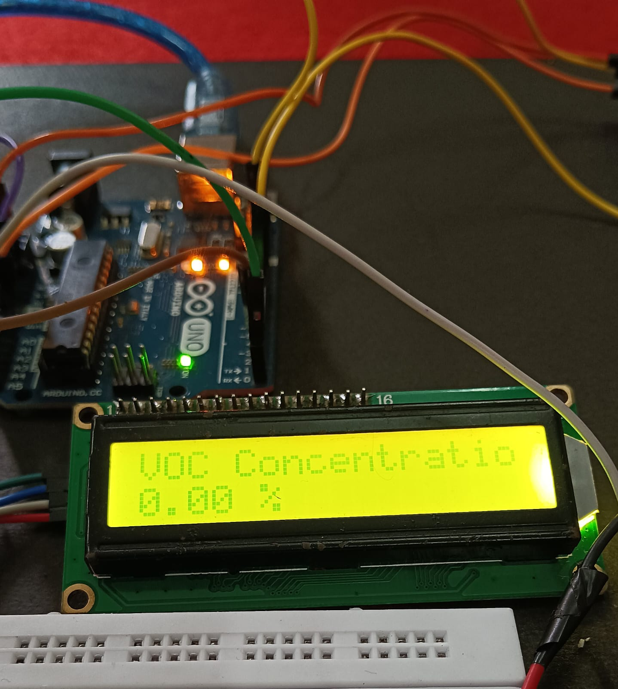

Developed a VOC (Volatile Organic Compound) Detection System to monitor the freshness and quality of fruits and vegetables. The system uses an MQ-3 gas sensor to detect gases released during the ripening and spoilage process. An Arduino Uno is used as the main controller to process sensor readings and display the output on an LCD screen. An ESP32 module is integrated with the Blynk platform to enable real-time monitoring on a smartphone. A buzzer is activated whenever abnormal VOC levels are detected. This project provides a low-cost solution for food quality monitoring and helps reduce food wastage through early spoilage detection.